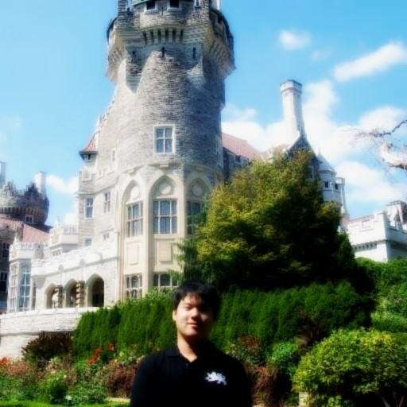

Hello!
My name is Hyun Su Seong or Winfred, a Canadian geographer (meteorologist) from Ontario. Thanks for visiting my online portfolio. I created this very minimalistic site to document my side projects and academic activities.
My specialization is in:
Tropical Cyclones. My master's research paper - Impacts of Atlantic Tropical Cyclones on Major Airports in Florida 2010 – 2017 - was focused on mathematical estimation of the power dissipation index of major hurricanes that struck Florida and the delay costs as a result for major airlines in that state. Hurricanes fascinate me because they are, in essence, a mysterious phenomena that is throwing a myriad of conundrums to geographers in terms of forecasting and its physical formation. I also focus on climate change, geocomputation with GIS, and cartography.
Avialinguistics. Currently in my PhD I study language issues in aviation with human factors perspective. Aviation English - the lingua franca of the air - is becoming more complex as the demand for pilots increase worldwide. I've also focused previously on competency-based training and assessment (CBTA) and cognitive engineering.
In conclusion, I bridge the gap between geography and human factors. This is a unique combination of knowledge which I use to analyze complex societal and environmental problems.
Things I do in my leisure time:
- Digital Painting: I love art, therefore I draw.
- Listening to Podcasts: For informing myself on climate change issues.
- Studying heraldry or vexillology.
My LinkedIn profile can be accessed from here. My GitHub profile is zorroartico [1].
Footnotes
[1] A portfolio without a logo is boring. By the way, "zorroartico" translates to arctic fox in Spanish. Hence the logo for this portfolio. Alas, it doesn't look like a fox. It looks more like a canine than vulpes. Anyways, the animal is in a combative stance adorned with a skyblue necktie and a pair of wrinkled feather wings. The wings represent aeronautics background and the necktie stands for work ethic. Below the animal is a plaque showing my name in Hangul, but highly stylized.